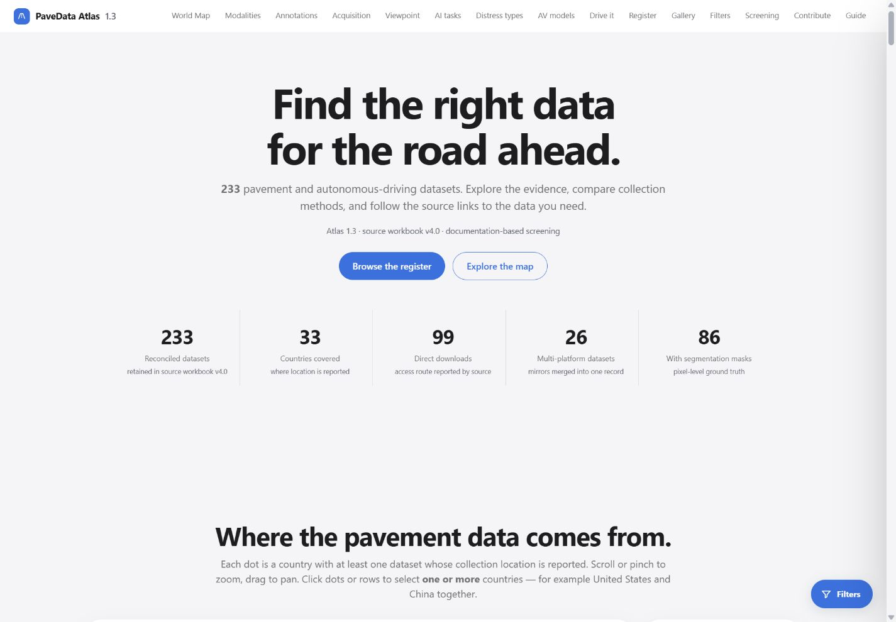
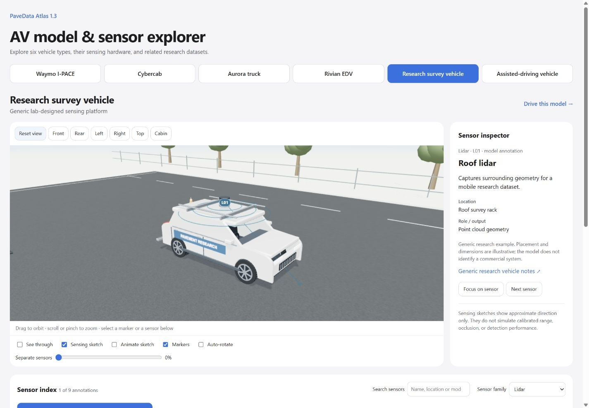
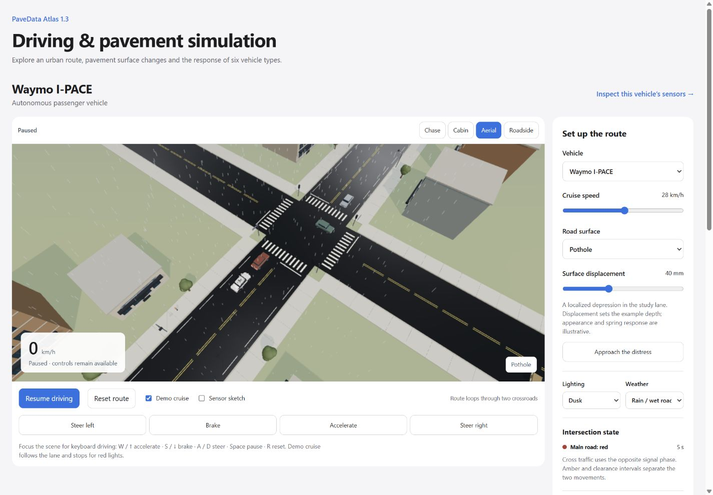
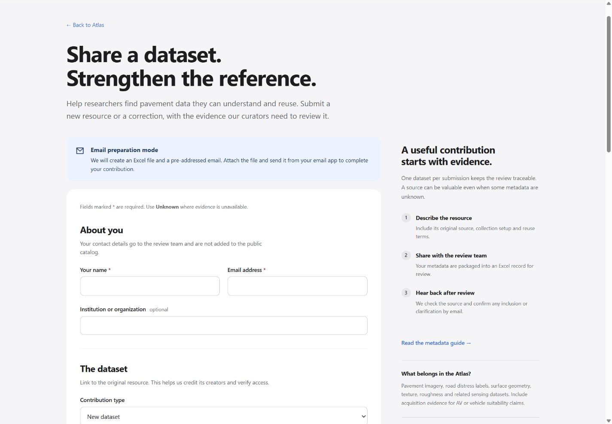

Use the Atlas with confidence.
PaveData Atlas brings pavement and autonomous-driving dataset references into one searchable catalog. Version 1.3 contains 233 retained dataset/release records from the supplied v4.0 comparison workbook. It helps you locate data, understand its collection and reuse limits, and inspect the evidence behind a selection.
Find a dataset
- Open the dataset register. Search by name, record ID, collection method, modality, task, distress or country.
- Use column filters or the global filters. Choices within one category use OR; different categories use AND. For example: United States or China, combined with LiDAR.
- The map, category counts, register, gallery and screening respond to the global filters. The register’s text search narrows the table only.
- Select a dataset name to open its full record. Use Export CSV to save the current register results. CSV includes the complete export field set, even if you hide table columns.
- Use Reset all filters to clear the register search and all global selections.
Counts are not necessarily additive: datasets can have several modalities, countries and tasks. Map dots are approximate national anchors, not recording coordinates. The image-count filter only uses an identifiable image/frame count; ambiguous totals and other units remain unreported for that filter.

Read a dataset record
Each page provides the preferred source, other recorded access routes, license wording, sample accounting, tasks, collection details, limitations and the complete current metadata. Source previews are credited documentation images. Follow the publisher’s access and license terms to obtain the actual data.
The lower–upper interval summarizes documented evidence under that record’s fixed cohort profile. Expand a dimension’s evidence to see its recorded rationale, then open the original source/evidence ledger for the supporting references. A missing value means it was not established in the supplied sources. The catalog does not invent a year, color modality or camera orientation to fill a gap.
Download metadata JSON includes original source rows and check evidence when loaded. Download BibTeX cites the catalog record. Your research must also cite the original dataset as requested by its authors.
Understand selection and scoring
The current unit is an identified dataset/release, not a hosted URL or a guaranteed independent acquisition corpus. The 248 source rows reconcile to 233 retained records; 15 AV aliases merge into existing records. Related releases, parent datasets and possible overlaps remain recorded.
The revised core uses these 16 checks:
| Dimension | Checks | What to inspect |
|---|---|---|
| A · Access | A1, A2, A3 | Release identity, access route, data terms |
| L · Annotation evidence | L1, L2, L4 | Target definitions, encoding and procedure, review practice |
| D · Documentation | D1, D2, D4 | File interpretation, provenance, stated limits |
| C · Sample accounting | C1, C2 | Release count and unit, relevant class or subset counts |
| R · Collection context | R1, R2 | Collection setting, variation or explicit boundaries |
| M · Acquisition details | M1, M2, M5 | Equipment, resolution or sampling units, processing |
Labeled-16 contains 229 records and gives each dimension 1/6 weight. Unlabeled-13 contains four records and excludes L for the entire cohort, giving A/D/C/R/M 1/5 each. Compare records within the same cohort. The register shows L16/U13 beside every interval; the screening list shows one cohort at a time.
For a dimension with m applicable checks, lower = 5 × Y / m; upper = 5 × (Y + U + X) / m. The overall index is the weighted mean of the dimension fractions, scaled to 100. Weights are normalized and calculations use unrounded values. U and X widen the interval; they do not become failed checks.
| State | Meaning |
|---|---|
| Y | Cited evidence meets the check |
| N | Affirmative evidence of failure |
| U | Missing, inaccessible, untested or insufficient evidence |
| X | Unresolved conflict |
Benchmark readiness (V) and engineering linkage (E) remain conditional modules outside the common score. G1 identity, G2 declared-task fit, G3 rights and verified retrieval, and G4 benchmarking leakage are separate stage gates. G4 does not apply to every inventory use. A documentation score of 100 does not imply validated data quality, permission to reuse, or a successful download.
The method’s strict >95% confirmed-N rule applies within a deduplicated applicable cohort; no current core check crosses it. Custom weights are exploratory. These are documentation bounds, not statistical confidence intervals. The source assessments remain provisional and human review is pending.
See the full methodology, machine-readable rubric and data provenance notes.
Explore vehicles, sensors and road conditions
The vehicle lab includes Waymo I-PACE, Cybercab, Aurora truck, Rivian EDV, a generic ADAS car and a lab survey vehicle. Orbit the model, choose a preset view, select a sensor, and inspect its role. Sensing graphics explain direction; they do not measure calibrated coverage or detection performance. Related dataset panels state whether a link is an official release, a third-party collection or a relevant alternative.
The road simulation adds crossroads, traffic signals, surrounding vehicles and pavement defects. Use the visible controls to start/pause, change vehicle and view, and alter conditions. The vehicle selection synchronizes between the two embedded workspaces. A full-window link above each scene gives more space.
Three.js/WebGL 2 renders these educational scenes locally. Enable hardware acceleration in a compatible browser. If 3D is unavailable, the catalog and textual sensor information remain available. Geometry, traffic behavior and ride response are illustrative. These scenes are not a calibrated simulator, IRI measurement tool or AV safety evaluation.


Contribute a dataset
Open the separate community submission form and the metadata schema. Your name and email are required for review follow-up, along with the essential dataset fields. Contact details are sent to the review team; they are not automatically added to the public catalog.
The form creates a real Excel workbook. When automatic delivery is configured, the Google receiver validates the metadata, creates the attachment and emails it to tianzhi.he@ami-lab.com. Its receipt page confirms acceptance by the mail service. When automatic delivery is not configured, the form downloads the workbook and opens a pre-addressed email draft. Attach the workbook and send it yourself; preparing a file or opening a draft does not submit it.
After receipt, the team checks the source, access, terms and possible duplicate records before confirming back to the contributor. Accepted entries are included in a later reviewed release.

Citation and downloads
Cite the original dataset in your work. To identify the Atlas used to find or compare data, use:
Source Excel workbookCatalog JSONProvenance and hashes
Update history · Repository README · Image and model credits